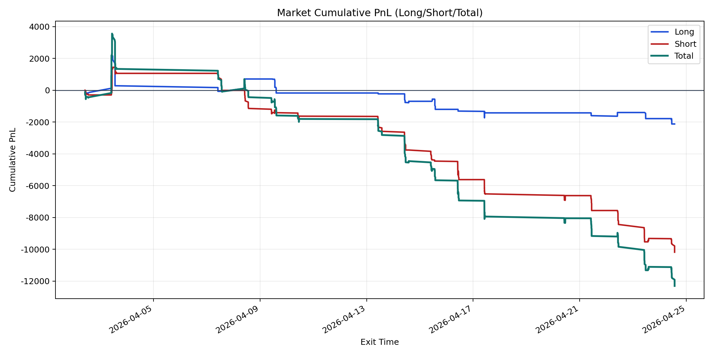
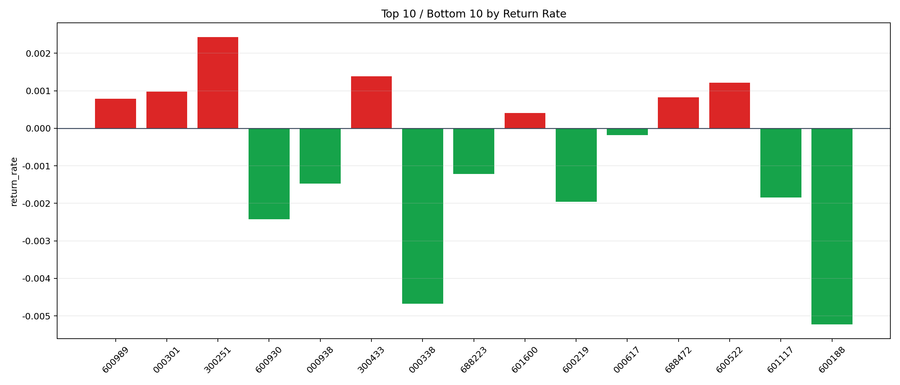

| repo_root | /home/haoranyou/data/output/dynamic_AUM_TAKER_index300 |
|---|---|
| period_months | 1 |
| period_label | 2026-04-02_to_2026-04-24 |
| start_time | 2026-04-02 10:22:57 |
| end_time | 2026-04-24 13:28:27 |
| n_trades | 592 |
| n_symbols | 15 |
| total_pnl | -12302.495550000232 |
| long_total_pnl | -2122.0276000000376 |
| short_total_pnl | -10180.467950000197 |
| total_entry_notional | 10640543.0 |
| long_entry_notional | 3422033.999999999 |
| short_entry_notional | 7218509.0 |
| total_return_rate | -0.0011561905769282858 |
| long_return_rate | -0.0006201071058908351 |
| short_return_rate | -0.0014103283586680015 |
| top_symbols_by_return | ["300251", "300433", "600522", "000301", "688472", "600989", "601600", "000617", "688223", "000938"] |
| bottom_symbols_by_return | ["600188", "000338", "600930", "600219", "601117", "000938", "688223", "000617", "601600", "600989"] |

